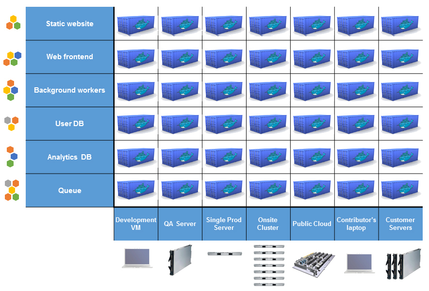
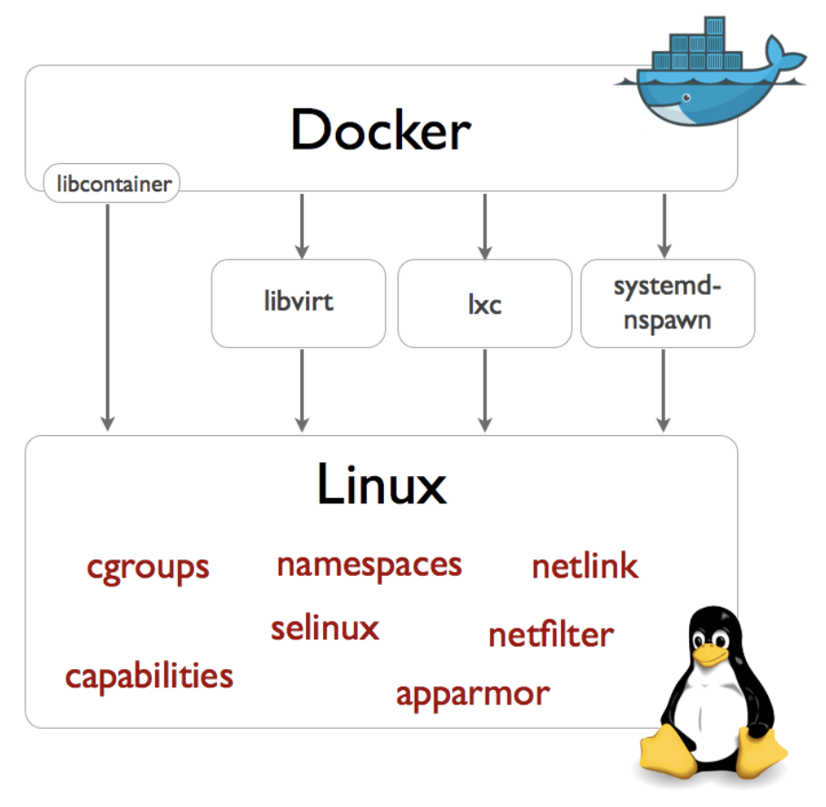
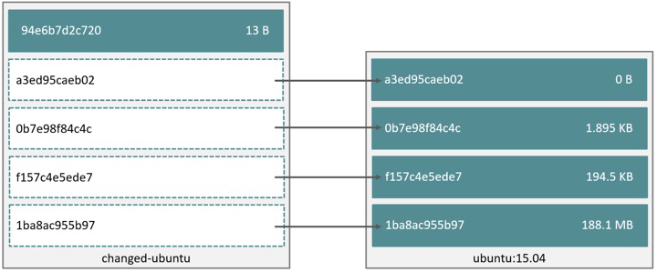
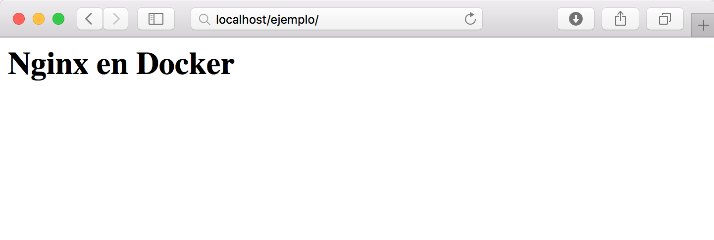
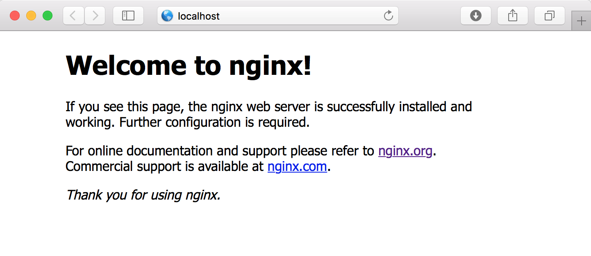
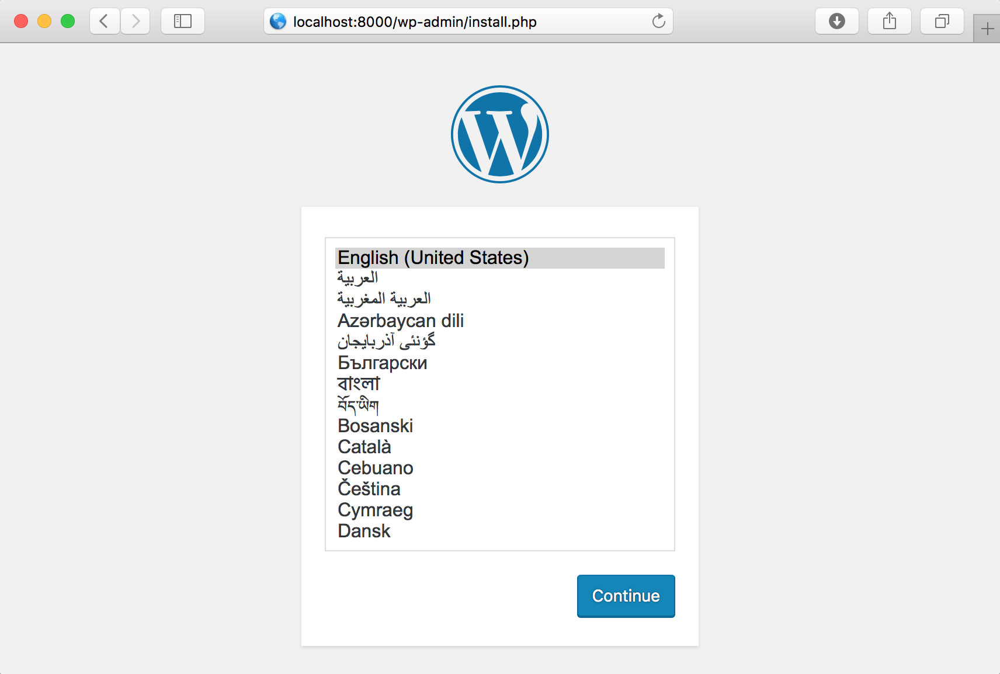
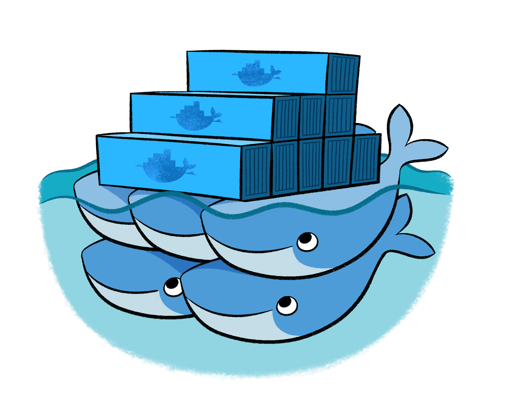

De desarrollo a producción usando
docker

Agenda
- ¿Quiénes somos?
- Docker: introducción
- Consideraciones para trabajar con Docker
- Volúmenes
- Docker Compose
- Docker en producción



|




# Más usados
docker run
docker ps
docker build
docker images
docker logs
docker inspect
docker volume
# Otros comandos comunes
docker commit
docker pull
docker push
docker tag
$ docker run --rm -it ubuntu:16.04 /bin/bash
Unable to find image 'ubuntu:16.04' locally
16.04: Pulling from library/ubuntu
6bbedd9b76a4: Pull complete
fc19d60a83f1: Pull complete
de413bb911fd: Pull complete
2879a7ad3144: Pull complete
668604fde02e: Pull complete
Digest: sha256:2d44ae143feeb36f4c898d32ed2ab2dffeb3a573d2d8928646dfc9cb7deb1315
Status: Downloaded newer image for ubuntu:16.04
root@99a3403db59a:/# cat /etc/issue
Ubuntu 16.04.1 LTS \n \l
FROM ubuntu:16.04
MAINTAINER Mikroways
# Instalar Nginx y configurar una página personalizada
RUN apt-get update && apt-get install -y nginx
RUN mkdir /var/www/html/ejemplo
RUN echo "<html><h1>Nginx en Docker</h1></html>" > /var/www/html/ejemplo/index.html
EXPOSE 80
CMD ["nginx", "-g", "daemon off;"]
$ docker build -t mikroways/nginx:1.0.0 .
Sending build context to Docker daemon 2.048 kB
Step 1 : FROM ubuntu:16.04
16.04: Pulling from library/ubuntu
6bbedd9b76a4: Already exists
fc19d60a83f1: Already exists
de413bb911fd: Already exists
2879a7ad3144: Already exists
668604fde02e: Already exists
Digest: sha256:2d44ae143feeb36f4c898d32ed2ab2dffeb3a573d2d8928646dfc9cb7deb1315
Status: Downloaded newer image for ubuntu:16.04
---> f753707788c5
Step 2 : MAINTAINER Mikroways
---> Running in f93e6923c21e
---> a1144bb80b28
Removing intermediate container f93e6923c21e
Step 3 : RUN apt-get update && apt-get install -y nginx
---> Running in 489697f5e5d5
Get:1 http://archive.ubuntu.com/ubuntu xenial InRelease [247 kB]
... (SALIDA REMOVIDA)
Processing triggers for systemd (229-4ubuntu10) ...
---> 136943551ea1
Removing intermediate container 489697f5e5d5
Step 4 : RUN mkdir /var/www/html/ejemplo
---> Running in 443cfc08af15
---> aff42d6aa899
Removing intermediate container 443cfc08af15
Step 5 : RUN echo "<html><h1>Nginx en Docker</h1></html>" >
/var/www/html/ejemplo/index.html
---> Running in 2bea67c34185
---> 4c9ad433769b
Removing intermediate container 2bea67c34185
Step 6 : EXPOSE 80
---> Running in c3bc2fd14bff
---> df1abe4570d5
Removing intermediate container c3bc2fd14bff
Step 7 : CMD nginx -g daemon off;
---> Running in 9d39a9f69468
---> 8fd110f3364a
Removing intermediate container 9d39a9f69468
Successfully built 8fd110f3364a
$ docker images
REPOSITORY TAG IMAGE ID CREATED SIZE
mikroways/nginx 1.0.0 8fd110f3364a 2 minutes ago 223.2 MB
ubuntu 16.04 f753707788c5 4 weeks ago 127.2 MB
$ docker run -d -p 80:80 mikroways/nginx:1.0.0

$ docker build -t mikroways/nginx:1.1.0 .
Sending build context to Docker daemon 2.048 kB
Step 1 : FROM ubuntu:16.04
---> f753707788c5
Step 2 : MAINTAINER Leandro Di Tommaso
---> Using cache
---> a1144bb80b28
Step 3 : RUN apt-get update && apt-get install -y nginx
---> Using cache
---> 136943551ea1
Step 4 : RUN mkdir /var/www/html/ejemplo
---> Using cache
---> aff42d6aa899
Step 5 : RUN echo "<html><h1>Nginx en Docker</h1></html>" >
/var/www/html/ejemplo/index.html
---> Using cache
---> 4c9ad433769b
Step 6 : EXPOSE 80
---> Using cache
---> df1abe4570d5
Step 7 : CMD nginx -g daemon off;
---> Using cache
---> 8fd110f3364a
Successfully built 8fd110f3364a
$ docker images
REPOSITORY TAG IMAGE ID CREATED SIZE
mikroways/nginx 1.0.0 8fd110f3364a 4 minutes ago 223.2 MB
mikroways/nginx 1.1.0 8fd110f3364a 4 minutes ago 223.2 MB
ubuntu 16.04 f753707788c5 4 weeks ago 127.2 MB
$ docker history 8fd110f3364a
IMAGE CREATED CREATED BY SIZE
8fd110f3364a 9 minutes ago /bin/sh -c #(nop) CMD ["nginx" "-g" "daemon 0 B
df1abe4570d5 9 minutes ago /bin/sh -c #(nop) EXPOSE 80/tcp 0 B
4c9ad433769b 9 minutes ago /bin/sh -c echo "<html><h1>Nginx en Docker</h 38 B
aff42d6aa899 9 minutes ago /bin/sh -c mkdir /var/www/html/ejemplo 0 B
136943551ea1 9 minutes ago /bin/sh -c apt-get update && apt-get install 96.07 MB
a1144bb80b28 11 minutes ago /bin/sh -c #(nop) MAINTAINER Leandro Di Tomm 0 B
f753707788c5 4 weeks ago /bin/sh -c #(nop) CMD ["/bin/bash"] 0 B
<missing> 4 weeks ago /bin/sh -c mkdir -p /run/systemd && echo 'doc 7 B
<missing> 4 weeks ago /bin/sh -c sed -i 's/^#\s*\(deb.*universe\)$/ 1.895 kB
<missing> 4 weeks ago /bin/sh -c rm -rf /var/lib/apt/lists/* 0 B
<missing> 4 weeks ago /bin/sh -c set -xe && echo '#!/bin/sh' > /u 745 B
<missing> 4 weeks ago /bin/sh -c #(nop) ADD file:b1cd0e54ba28cb1d6d 127.2 MB
Reducir la historia de nuestra imagen
FROM ubuntu:16.04
MAINTAINER Mikroways
# Instalar Nginx y configurar una página personalizada
RUN apt-get update && apt-get install -y nginx && \
mkdir /var/www/html/ejemplo && \
echo "<html><h1>Nginx en Docker</h1></html>" > /var/www/html/ejemplo/index.html
EXPOSE 80
CMD ["nginx", "-g", "daemon off;"]
$ docker build -t mikroways/nginx:1.2.0 .
$ docker history f59c5df272d2
IMAGE CREATED CREATED BY SIZE
f59c5df272d2 34 hours ago /bin/sh -c #(nop) CMD ["nginx" "-g" "daem... 0B
340fdfe97f9b 34 hours ago /bin/sh -c #(nop) EXPOSE 80/tcp 0B
059fb096e7ef 34 hours ago /bin/sh -c apt-get update && apt-get insta... 95.4MB
a1144bb80b28 11 minutes ago /bin/sh -c #(nop) MAINTAINER Leandro Di Tomm 0 B
f753707788c5 4 weeks ago /bin/sh -c #(nop) CMD ["/bin/bash"] 0 B
<missing> 4 weeks ago /bin/sh -c mkdir -p /run/systemd && echo 'doc 7 B
<missing> 4 weeks ago /bin/sh -c sed -i 's/^#\s*\(deb.*universe\)$/ 1.895 kB
<missing> 4 weeks ago /bin/sh -c rm -rf /var/lib/apt/lists/* 0 B
<missing> 4 weeks ago /bin/sh -c set -xe && echo '#!/bin/sh' > /u 745 B
<missing> 4 weeks ago /bin/sh -c #(nop) ADD file:b1cd0e54ba28cb1d6d 127.2 MB
$ docker run -d -p 80:80 nginx
da48ee78d747bb591ce19aba0067ef08cbfc61cc15edc22c54e06293cea0d067
$ docker ps
CONTAINER ID IMAGE COMMAND CREATED STATUS PORTS NAMES
da48ee78d747 nginx "nginx -g 'daemon off" 53 seconds ago Up 52 seconds 0.0.0.0:80->80/tcp, 443/tcp sick_gates

FROM nginx
MAINTAINER Mikroways
# Configurar una página personalizada
RUN mkdir /usr/share/nginx/html/ejemplo
RUN echo "<html><h1>Nginx en Docker</h1></html>" > /usr/share/nginx/html/ejemplo/index.html
$ docker build -t mikroways/nginx:1.2.0 .
Sending build context to Docker daemon 2.048 kB
Step 1 : FROM nginx
---> 4a88d06e26f4
Step 2 : MAINTAINER Mikroways
---> Running in a26b83fa5203
---> 262f7d703c38
Removing intermediate container a26b83fa5203
Step 3 : RUN mkdir /usr/share/nginx/html/ejemplo
---> Running in 4be7d2590452
---> 810b82a8e071
Removing intermediate container 4be7d2590452
Step 4 : RUN echo "<html><h1>Nginx en Docker</h1></html>" >
/usr/share/nginx/html/ejemplo/index.html
---> Running in ac766cd14d5b
---> e63d722c67f2
Removing intermediate container ac766cd14d5b
Successfully built e63d722c67f2
$ docker run -d -p 80:80 mikroways/nginx:1.2.0
266399f252a7ef71e4821b375f0edc1777e7dec2f907bb0434c46c629fd3926d
$ docker ps
CONTAINER ID IMAGE COMMAND CREATED STATUS PORTS NAMES
266399f252a7 mikroways/nginx:1.2.0 "nginx -g 'daemon off" 3 seconds ago Up 3 seconds 0.0.0.0:80->80/tcp, 443/tcp peaceful_euler
Para levantar la registry podemos usar Docker y subir nuestras propias imágenes.
docker run -d -p 5000:5000 --name registry registry:2
docker pull ubuntu
docker tag ubuntu localhost:5000/myfirstimage
docker push localhost:5000/myfirstimage
docker pull localhost:5000/myfirstimage
Un mal diseño de las imágenes impactará en la performance de los contenedores que generarán grandes capas con datos dinámicos.
Ante la actualización del contenedor, estos datos se perderán.
$ docker run -it ubuntu:16.04 /bin/bash
root@6ce39ac62830:/#
$ docker ps -s
docker ps -s
CONTAINER ID IMAGE .... SIZE
6ce39ac62830 ubuntu:16.04 .... 0B (virtual 120MB)
root@6ce39ac62830:/# echo "hola" > /tmp/prueba
$ docker ps -s
docker ps -s
CONTAINER ID IMAGE .... SIZE
6ce39ac62830 ubuntu:16.04 .... 5B (virtual 120MB)
El tamaño es lo que crece el contenedor respecto de la imagen. El tamaño virtual es lo que ocupa el contenedor sumado al tamaño de la imagen.
root@6ce39ac62830:/# dd if=/dev/zero of=/tmp/lala.img bs=1M count=10
10+0 records in
10+0 records out
10485760 bytes (10 MB, 10 MiB) copied, 0.0127865 s, 820 MB/s
$ docker ps -s
docker ps -s
CONTAINER ID IMAGE .... SIZE
6ce39ac62830 ubuntu:16.04 .... 10.5MB (virtual 131MB)
Es posible ver en los contenedores qué archivos cambiaron.
$ docker diff 6ce39ac62830
C /tmp
A /tmp/lala.img
A /tmp/prueba
$ docker volume ls
DRIVER VOLUME NAME
$ docker run -it -v /opt ubuntu /bin/bash
root@a9c1a6e6c0ea:/# ls /opt/
root@a9c1a6e6c0ea:/# echo "Prueba" > /opt/archivo
root@a9c1a6e6c0ea:/# exit
$ docker ps -a
CONTAINER ID IMAGE COMMAND CREATED STATUS NAMES
a9c1a6e6c0ea ubuntu "/bin/bash" 2 minutes ago Exited (0) About a minute ago small_jennings
$ docker volume ls
DRIVER VOLUME NAME
local e9c7022b8c7bec55891ca44b8c40de1e5f41cf0fe9505a334bca06a484a5ff1f
$ docker volume inspect e9c7022b8c7bec55891ca44b8c40de1e5f41cf0fe9505a334bca06a484a5ff1f
[
{
"Name": "e9c7022b8c7bec55891ca44b8c40de1e5f41cf0fe9505a334bca06a484a5ff1f",
"Driver": "local",
"Mountpoint": "/var/lib/docker/volumes/e9c7022b8c7bec55891ca44b8c40de1e5f41cf0fe9505a334bca06a484a5ff1f/_data",
"Labels": null,
"Scope": "local"
}
]
$ ls /var/lib/docker/volumes/e9c7022b8c7bec55891ca44b8c40de1e5f41cf0fe9505a334bca06a484a5ff1f/_data
archivo
$ cat /var/lib/docker/volumes/e9c7022b8c7bec55891ca44b8c40de1e5f41cf0fe9505a334bca06a484a5ff1f/_data/archivo
Prueba
$ docker run -it -v /opt ubuntu /bin/bash
root@cad2a83c1c50:/# ls /opt/
root@cad2a83c1c50:/# exit
$ docker ps -a
CONTAINER ID IMAGE COMMAND CREATED STATUS NAMES
cad2a83c1c50 ubuntu "/bin/bash" 2 minutes ago Exited (0) About a minute ago big_almeida
a9c1a6e6c0ea ubuntu "/bin/bash" 11 minutes ago Exited (0) 10 minutes ago small_jennings
$ docker volume ls
DRIVER VOLUME NAME
local 483ea67555fb592d25e51fe513b42f4a611398ad2824c029d7767a605eb7967d
local e9c7022b8c7bec55891ca44b8c40de1e5f41cf0fe9505a334bca06a484a5ff1f
$ docker volume ls
DRIVER VOLUME NAME
$ docker run -it -v test:/opt ubuntu /bin/bash
root@7def6f99f957:/# ls /opt/
root@7def6f99f957:/# echo "Prueba" > /opt/archivo
root@7def6f99f957:/# exit
$ docker ps -a
CONTAINER ID IMAGE COMMAND CREATED STATUS NAMES
7def6f99f957 ubuntu "/bin/bash" 2 minutes ago Exited (0) 2 minutes ago mad_mccarthy
$ docker volume ls
DRIVER VOLUME NAME
local test
$ docker volume inspect test
[
{
"Name": "test",
"Driver": "local",
"Mountpoint": "/var/lib/docker/volumes/test/_data",
"Labels": null,
"Scope": "local"
}
]
$ ls /var/lib/docker/volumes/test/_data
archivo
$ cat /var/lib/docker/volumes/test/_data/archivo
Prueba
$ docker run -it -v test:/opt ubuntu /bin/bash
root@2899fc8bc061:/# ls /opt/
archivo
root@2899fc8bc061:/# cat /opt/archivo
Prueba
root@2899fc8bc061:/# exit
$ docker ps -a
CONTAINER ID IMAGE COMMAND CREATED STATUS NAMES
2899fc8bc061 ubuntu "/bin/bash" 14 seconds ago Exited (0) 6 seconds ago prickly_nobel
7def6f99f957 ubuntu "/bin/bash" 5 minutes ago Exited (0) 4 minutes ago mad_mccarthy
$ docker volume ls
DRIVER VOLUME NAME
local test
Verificamos que no existe ningún volumen de Docker.
$ docker volume ls
DRIVER VOLUME NAME
Creamos un directorio en el sistema operativo host.
$ mkdir /data
$ ls /data
Ejecutamos el contenedor montando el directorio creado.
$ docker run -it -v /data:/opt ubuntu /bin/bash
Dentro del contenedor, vemos que nada existe en /opt.
root@5e09b8264bf0:/# ls /opt/
Desde el host, creamos un archivo con contenido.
$ echo "Prueba" > /data/archivo
Verificamos /opt en el contenedor y agregamos contenido.
root@5e09b8264bf0:/# ls /opt/
archivo
root@5e09b8264bf0:/# echo "Otra prueba" >> /opt/archivo
Finalmente, en el host, vemos el archivo actualizado.
$ cat /data/archivo
Prueba
Otra prueba
Ahora, chequeamos los volúmenes de Docker creados.
$ docker volume ls
DRIVER VOLUME NAME
$ docker run -d -v /opt --name ubuntu-pruebas ubuntu /bin/bash -c 'echo "Prueba" > /opt/archivo'
fe9e2cddd9c3f37bb01e322978e0ed6008b005dea86ed31bee47da57e5e35863
$ docker ps -a
CONTAINER ID IMAGE COMMAND CREATED STATUS NAMES
fe9e2cddd9c3 ubuntu /bin/bash -c 2 minutes ago Exited (0) 2 minutes ago ubuntu-pruebas
$ docker run -it --volumes-from ubuntu-pruebas ubuntu /bin/bash
root@555ec4005dcd:/# ls /opt/
archivo
root@555ec4005dcd:/# cat /opt/archivo
Prueba
Ejemplo de uso: backups.
Creamos un directorio en el host para backups.
$ mkdir /data
$ ls /data
Copiamos los datos a un volumen en el host.
$ docker run --rm --volumes-from ubuntu-pruebas -v /data:/backups ubuntu /bin/bash -c 'cp -a /opt/* /backups'
Al finalizar la ejecución, tenemos los datos en el host.
$ ls /data
archivo
$ cat /data/archivo
Prueba
version: '3'
services:
db:
image: mysql:5.7
volumes:
- "dbdata:/var/lib/mysql"
restart: always
environment:
MYSQL_ROOT_PASSWORD: wordpress
MYSQL_DATABASE: wordpress
MYSQL_USER: wordpress
MYSQL_PASSWORD: wordpress
wordpress:
depends_on:
- db
image: wordpress:latest
links:
- db
ports:
- "80:80"
restart: always
environment:
WORDPRESS_DB_HOST: db:3306
WORDPRESS_DB_PASSWORD: wordpress
volumes:
dbdata: {}
$ docker-compose up -d
Creating network "wordpress_default" with the default driver
Creating volume "wordpress_dbdata" with default driver
Creating wordpress_db_1
Creating wordpress_wordpress_1
$ docker-compose ps
Name Command State Ports
------------------------------------------------------------------------------------
wordpress_db_1 docker-entrypoint.sh mysqld Up 3306/tcp
wordpress_wordpress_1 /entrypoint.sh apache2-for ... Up 0.0.0.0:8000->80/tcp

$ docker-compose logs -f
wordpress_1 | 127.0.0.1 - - [16/Nov/2016:17:56:39 +0000] "GET / HTTP/1.1" 302 384 "-" "Mozilla/5.0 (Macintosh; Intel Mac OS X 10_12_1) AppleWebKit/537.36 (KHTML, like Gecko) Chrome/54.0.2840.98 Safari/537.36"
wordpress_1 | 127.0.0.1 - - [16/Nov/2016:17:56:39 +0000] "GET /wp-admin/install.php HTTP/1.1" 200 3410 "-" "Mozilla/5.0 (Macintosh; Intel Mac OS X 10_12_1) AppleWebKit/537.36 (KHTML, like Gecko) Chrome/54.0.2840.98 Safari/537.36"
wordpress_1 | 127.0.0.1 - - [16/Nov/2016:17:56:41 +0000] "GET /favicon.ico HTTP/1.1" 200 228 "http://127.0.0.1:8000/wp-admin/install.php" "Mozilla/5.0 (Macintosh; Intel Mac OS X 10_12_1) AppleWebKit/537.36 (KHTML, like Gecko) Chrome/54.0.2840.98 Safari/537.36"
$ docker-compose ps
Name Command State Ports
-------------------------------------------------------------------------------------
wordpress_db_1 docker-entrypoint.sh mysqld Up 3306/tcp
wordpress_wordpress_1 /entrypoint.sh apache2-for ... Up 0.0.0.0:8000->80/tcp
$ docker-compose stop
Stopping wordpress_wordpress_1 ... done
Stopping wordpress_db_1 ... done
$ docker-compose ps
Name Command State Ports
-----------------------------------------------------------------------
wordpress_db_1 docker-entrypoint.sh mysqld Exit 0
wordpress_wordpress_1 /entrypoint.sh apache2-for ... Exit 0
$ docker-compose start
Starting db ... done
Starting wordpress ... done
$ docker-compose ps
Name Command State Ports
-------------------------------------------------------------------------------------
wordpress_db_1 docker-entrypoint.sh mysqld Up 3306/tcp
wordpress_wordpress_1 /entrypoint.sh apache2-for ... Up 0.0.0.0:8000->80/tcp
Dado que Docker no setea políticas de reinicio por defecto, cuando un servicio iniciado con Docker termina, no se toma ninguna acción.
Las políticas de reinicio podrían conflictuar con los manejadores de procesos.
docker start -a Docker attachará al contenedor corriendo (o
iniciará si no está corriendo) reenviando las señales al manejador de
procesos.Para entender los siguientes ejemplos veremos qué hace:
docker start -a
# Iniciamos un contenedor nginx daemonizado y nombrado:
docker run -d --name=nginx_docker -p 9090:80 nginx
# El contenedor ya atiende en el puerto 9090:
curl http://localhost:9090
# Usando docker start para attachar al contenedor nombrado
docker start -a nginx_docker
Ctrl+C # envía la señal SIGTERM al proceso. Muere el contenedor
# el comando curl ya no es exitoso
# Usando nuevamente docker start
docker start -a nginx_docker # reinicia el servicio
Un contenedor que inicia Redis.
description "Redis container"
author "Me"
start on filesystem and started docker
stop on runlevel [!2345]
respawn
script
/usr/bin/docker start -a redis_server
end script
[Unit]
Description=Redis container
Requires=docker.service
After=docker.service
[Service]
Restart=always
ExecStart=/usr/bin/docker start -a redis_server
ExecStop=/usr/bin/docker stop -t 2 redis_server
[Install]
WantedBy=default.target
docker stop -t TIME envía la señal SIGTERM y luego del tiempo especificado envía
SIGKILL
Si no queremos utilizar manejadores de procesos, entonces podemos emplear las políticas de reinicio.
Estas políticas permiten especificar cómo un contenedor debería o no ser reiniciado cuando termina.
Script que espera 5 segundos y termina.
#!/bin/bash
sleep 5
exit 0
Dockerfile
FROM ubuntu:16.04
MAINTAINER Mikroways
ADD prueba_restart.sh /
CMD ["/bin/bash", "/prueba_restart.sh"]
# Creamos la imagen
docker build -t mikroways/restart_policy .
# Iniciamos con restart policy always
docker run -d --restart=always --name=prueba mikroways/restart_policy
# Verificamos la cantidad de reinicios
watch 'docker inspect -f "{{ .RestartCount }}" prueba'
Si en lugar de utilizar always, hubiéramos elegido on-failure, el contenedor no se habría reiniciado porque el código de retorno es 0.
Como ejercicio: probar con esa política utilizando exit 0 y cambiando luego
por exit 1.
|  | Swarm |
| Cattle/Rancher | |
| |
Kubernetes |
| Apache Mesos |